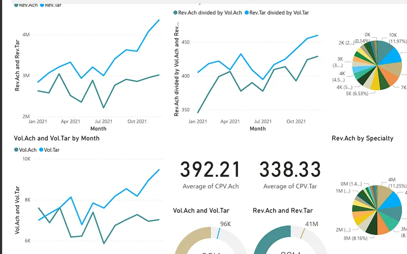

Healthcare Center Performance
Are doctors, specialties and business units meeting their monthly volume and revenue targets, and are the targets realistic?
- 2021 volume reached 83K of a 96K target and revenue 33M of 41M, while charge per visit beat target (392 vs 338): the gap is patient volume, not pricing.
- From mid-2021 the revenue target climbed to ~4.3M a month while actuals held near 3M; I flagged the Q4 target method as unrealistic and it was revised.
- Power BI
- Excel